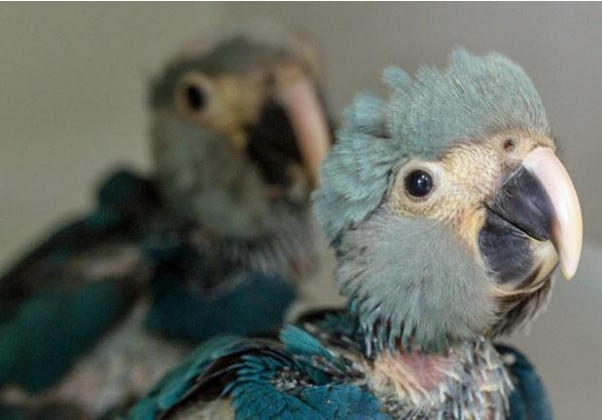
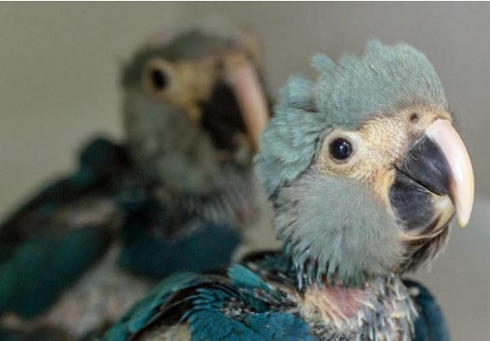

Historicamente, os primeiros registros de animais selvagens mantidos em cativeiro referem-se ao Egito e outros impérios há mais de 4.000 anos. Os primeiros zoológicos originaram-se de coleções particulares de reis e nobres, cuja principal finalidade era demonstrar status, poder e riqueza. Atualmente, no entanto, devido à pressões ambientais e sociais, o papel dos zoológicos no século XXI mudou drasticamente
Hoje, os zoológicos baseiam-se em quatro pilares: a conservação de espécies, o apoio à pesquisas científicas, a sensibilização do público à educação ambiental, além de proporcionar lazer e entretenimento aos visitantes.
Ao contrário do que se acredita, a procedência dos animais em cativeiro não se dá na captura de animais em vida livre. Tanto os zoológicos quanto os aquários realizam ações de preservação, mantendo animais provindos de outros centros de conservação, animais oriundos do tráfico ilegal e animais resgatados inaptos à vida livre. Apesar das críticas, a manutenção de algumas espécies em cativeiro é a única solução para tentar promover a recuperação de populações em extinção ou já extintas.
Como exemplo, a ararinha-azul, quase extinta na natureza devido ao tráfico, conseguiu ser reproduzida em cativeiro em 2014 graças aos esforços destes centros. De forma semelhante, o urso panda, algumas espécies de chimpanzés e lobos, que já estiveram em perigo iminente de extinção, hoje são capazes de se reproduzir em cativeiro, possibilitando a soltura de exemplares em vida livre.
Devido grandes dificuldades em atender as necessidades de cada espécie individualmente, faz-se extremamente necessário a formação de profissionais capacitados nas diversas áreas - reprodução, nutrição, sanidade, ambiência e bem estar - para que os pilares nos quais os zoológicos da atualidade se baseiam sejam mantidos. Desta forma, zoológicos possibilitam a transferência de know-how, beneficiando o manejo e preservação de espécies na natureza.
Em suma, hoje, zoológicos são indispensáveis para a manutenção da biodiversidade, possibilitando a sobrevivência de populações inteiras a partir de poucos exemplares, com base no conhecimento técnico desenvolvido para cada espécie. Embora os zoológicos não sejam substitutos à preservação das espécies in loco, sua existência permite a sensibilização da população quanto a importância da conservação e disseminação de conhecimento para melhorar cada vez mais a qualidade de vida dos animais em cativeiro, possibilitando futura reintrodução de exemplares quando necessário.
 

Fonte imagens: http://g1.globo.com/natureza/noticia/2014/12/brasil-registra-nascimento-defilhotes-de-ararinha-azul-depois-de-14-anos.html [Acesso em 23 10 2017].